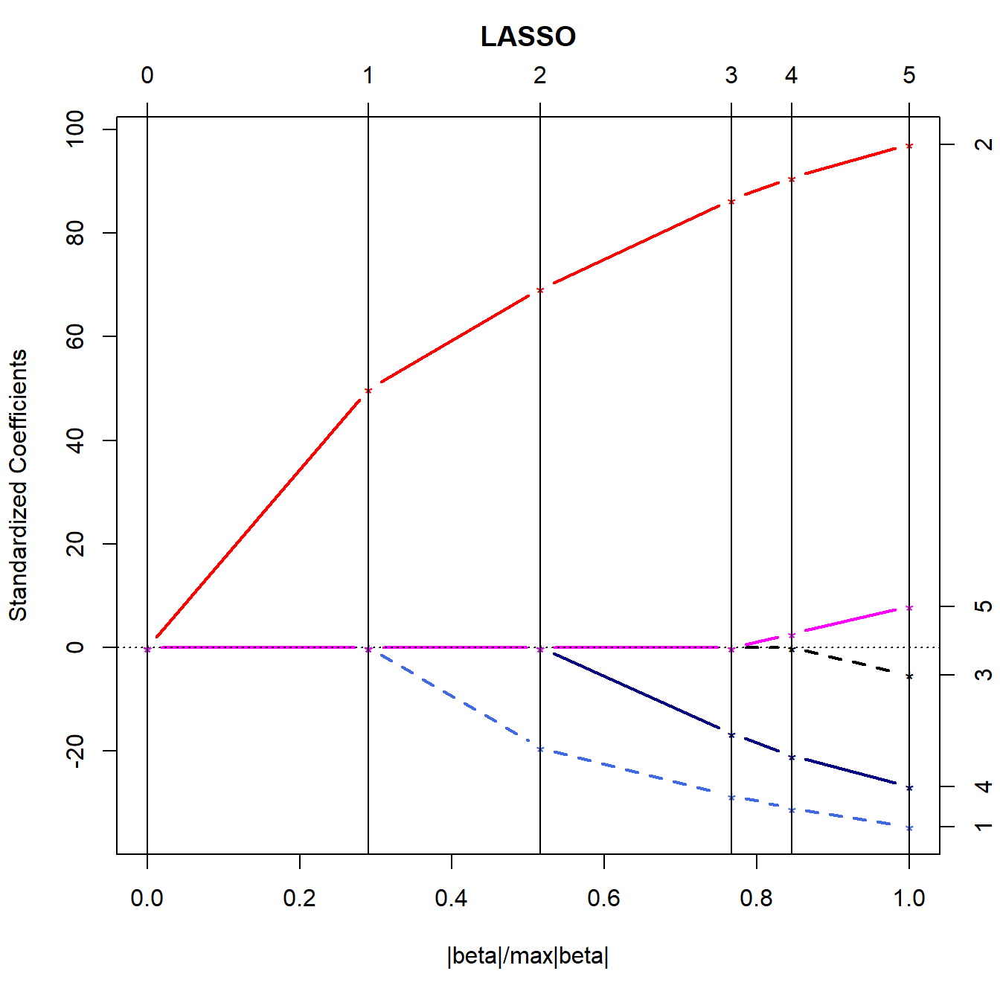

Lab 5
General Instructions
- Submit your work via Canvas.
- The deadline for this Lab is specified on the Calendar.
- Work submitted more than 59 minutes late, but within 12 hours of the deadline will lose 5 of the available 50 points.
- Work submitted 12 to 24 hours after the deadline will lose 10 of the available 50 points.
- Work submitted more than 24 hours after the deadline will not be graded.
Your response should include a Quarto file (.qmd) and an HTML document that is the result of applying your Quarto file to the data we’ve provided. While we have not provided a specific template for this Lab, we encourage you to adapt the one provided for Lab 2.
Question 1. (30 points)
Begin with the hbp3456 data we developed in Lab 2.
Build a Table 1 to compare the subjects in the Highland practice to the subjects in the Sycamore practice on the following nine variables:
- age,
- race,
- Hispanic ethnicity,
- sex,
- primary insurance,
- body mass index,
- BMI category,
- systolic blood pressure, and
- diastolic blood pressure.
Make the Table as well as you can within Quarto, and display the result as part of your HTML file. All code must be visible to us. Include a description of the important results from your Table 1 that does not exceed 100 words, using complete English sentences.
Hints for Question 1
- Be sure that your table specifies the number of subjects in each practice. Note that you’ll have to do something so that your work focuses on the comparison of Highland to Sycamore, leaving out (for this question only) the other practices.
- You’ll have to deal with some missing values in the data. All missing values are indicated in the .csv file with NA. It’s not usually appropriate to report results that include imputation in a Table 1, so build a note specifying the amount of missing data in a footnote to the table. An appropriate approach would be to produce a list just below your Table. Do not impute for Question 1.
- Some variables will present as characters in the data, but you’d instead prefer them to appear as factors. Be sure to include code in your response to make these changes (the
forcatspackage is your friend here) and then (perhaps using thefct_relevelfunction in theforcatspackage) be sure to move the levels of those factors into an order that facilitates interpretation. - Be sure, too, to make reasoned choices about whether means and standard deviations or instead medians and quartiles are more appropriate displays for the quantitative variables. Include your reasons in a list displayed at the end of your table. Note that the
recordinformation is just a code (even though it is numerical) and should be treated as a character variable in using these data, as I did above. - Note that body mass index (BMI) and BMI category are not supplied in the data, although you do have height and weight. So, you’ll have to calculate the BMI and add it to the data set. If you don’t know the formula for BMI, you have Google to help you figure it out.
- For BMI categories, use the four groups specified in the How is BMI interpreted for Adults section of this description of Adult BMI by the Centers for Disease Control. Again, you’ll need to use your calculated BMI values and then create the categories in your data set, and you’ll need to figure out a way to accurately get each subject into the correct category.
- Do not include R output without complete sentences describing what you are doing in each step, and what you conclude from that work.
Question 2. (20 points)
Consider the LASSO plot shown below, which describes a situation with five candidate predictors, called Variables 1, 2, 3, 4, and 5.
- If the \(|\beta| / max|\beta|\) value at which the cross-validated mean square error was minimized in this situation was 0.6, then which predictors does the plot suggest should be included in the model? In a sentence or two, how do you know?
- At what values of \(|\beta| / max|\beta|\) would the LASSO plot suggest a model which leaves out exactly one of the five predictors? And which predictor does this model leave out? Explain your reasoning in a sentence or two.
Our Best Advice
Review your HTML output file carefully before submission for copy-editing issues (spelling, grammar and syntax.) Even with spell-check in RStudio (just hit F7), it’s hard to find errors with these issues in your Quarto file so long as it is running. You really need to look closely at the resulting HTML output.
Session Information
Please display your session information at the end of your submission, as shown below.
xfun::session_info()R version 4.3.2 (2023-10-31 ucrt)
Platform: x86_64-w64-mingw32/x64 (64-bit)
Running under: Windows 11 x64 (build 22621)
Locale:
LC_COLLATE=English_United States.utf8
LC_CTYPE=English_United States.utf8
LC_MONETARY=English_United States.utf8
LC_NUMERIC=C
LC_TIME=English_United States.utf8
Package version:
base64enc_0.1.3 bslib_0.6.1 cachem_1.0.8 cli_3.6.2
compiler_4.3.2 digest_0.6.33 ellipsis_0.3.2 evaluate_0.23
fastmap_1.1.1 fontawesome_0.5.2 fs_1.6.3 glue_1.6.2
graphics_4.3.2 grDevices_4.3.2 highr_0.10 htmltools_0.5.7
htmlwidgets_1.6.4 jquerylib_0.1.4 jsonlite_1.8.8 knitr_1.45
lars_1.3 lifecycle_1.0.4 magrittr_2.0.3 memoise_2.0.1
methods_4.3.2 mime_0.12 R6_2.5.1 rappdirs_0.3.3
rlang_1.1.2 rmarkdown_2.25 rstudioapi_0.15.0 sass_0.4.8
stats_4.3.2 stringi_1.8.3 stringr_1.5.1 tinytex_0.49
tools_4.3.2 utils_4.3.2 vctrs_0.6.5 xfun_0.41
yaml_2.3.8